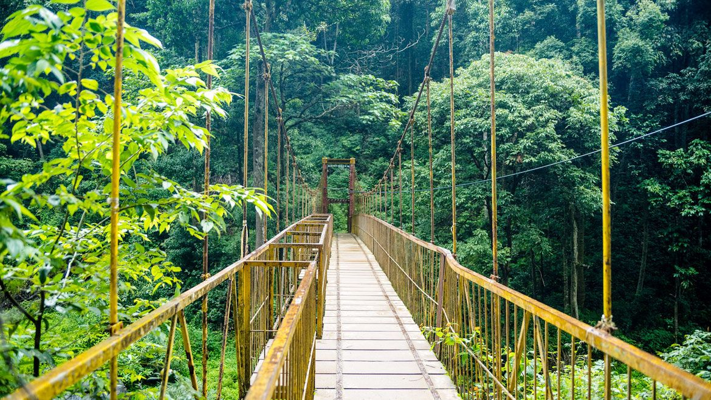

Travel is Life.Couldn't agree more?
we not just discuss travell,
We make it happens
Best Places To Visit Coorg
 Snuggled in the arms of jade mountains and gorgeous valleys of Karnataka in South India – Coorg is a beautiful destination to spend a perfect vacation with your family and loved ones.
It’s stunning landscapes, covered with widely spread coffee plantations and misty lush green forest that are partially penetrated by the sun rays, come as a delightful sight to its visitors.
Even if your are a nature lover, an adventure enthusiast or on a look out for the best honeymoon destination, Coorg is one stop for all kind of travellers. And this is reason why, in the travel guide,
Coorg secures the top position among all the tourists destinations that has popularised Karnataka Tourism.
As far as to talk about Coorg Tourism, the places to visit here are immense. But, after narrowing down the list, we have come up with top 15 places that must be included in your itinerary to make your visit an experience of a lifetime! Scroll down to know more…
Gushing between the aromatic coffee plantations and spice estates; the charming Abbey Falls is one of the best place to see in Coorg. The hanging bridge constructed right opposite to the falls, offers the enchanting views of cascading waters of river Kaveri, and also serve as the perfect spot to capture a memorable moment with the nature. Located just 8 km away from the Madikeri, Abbey Falls is an inviting summer getaway for your kids vacations.
Once the favorite hangout place of the Rajas who visited here with their queens, because of its unsurpassable scenic beauty and pleasant climate, is now a charming garden adorned with an array of colorful flowers, artificial fountains and a concrete arc overlooking the green hills looming with cottony clouds. As for your holidays, this place gives a kick start to your one day sightseeing pursuit in Coorg.
Also known as Kithu Kakathu River, Barapole river is an inviting spot for the nature lovers and who have keen interest into river rafting. The river is flourished with roaring currents of clean water, amazing natural surrounding and fresh air breeze, all which is required for a breathtaking river rafting experi The nature lovers can stroll around the place and have an incredible time while relishing the general splendour.
Perched at an altitude of 1633 m – the Brahmagiri peak covered with immense greenery, is truly an adventurer’s delight. There are a lot of streams on the way that nourishes this spell-binding hill and are also considered needful as for the supply of fresh water to the trekkers. The Brahmagiri Wildlife Sanctuary here is a major tourists attraction, which is supplied with the abundance of fauna and flora. So, for a wholesome experience of adventure plus of the exciting wildlife, a visit to this place is a must.

Located at the foot of Pushpagiri Hill Ranges, Mallalli Falls are one of the best places in Coorg to spend some time. It is situated in Bettadahalli Gram Panchayat of Somwarpet which is one of the taluks in the district of Coorg. Mallalli Falls are created when River Kumaradhara drips down from the peak of Pushpagiri Peak, which is over a height of approximately 200 feet. These falls are also good for trekking. Trekkers will come across interesting routes with beautiful settings around them which makes the experience all the more interesting and enjoyable. However, there are many leeches on the routes so it is better to be prepared for them while trekking. The falls at the foot of Pushpagiri peak and trekking till the peak, enhances your overall Coorg experience. To reach the Mallalli Falls, one can hire a private taxi well from any of the nearby towns. The falls are 25 kilometres away from Somwarpet and 42 km away from Kushalnagar. If not interested in private transportation, you can also take public transportation. You will get buses from Hanchinalli, the nearest village to water the falls from Somwarpet.
Located 4 km before Abbey Falls, Mandalpatti is at a distance of 25- 30 km from Madikeri town. Offering amazing scenic beauty and perfect opportunities to be amidst the best of natural settings, Mandalpatti is increasingly become popular amongst tourists. The place offers tourists with some seclusion and space away from the usual crowdedness of the tourist spots. The place is perfect for trekking lovers and who like some adventure and seek best of natural settings. In order to go trekking, trekkers are supposed to take entrance tickets from the authorities at the base of Mandalpatti. The trek presents trekkers with beautiful scenery and rich flora and fauna. However, you won’t find any facility on the route. So it is better to carry items like water and food as well other equipment for trekking with you. For reaching Mandalpatti, tourists must take the deviating road which is 4 km before the famous Abbey Falls. No bus service is available for Mandalpatti and thus one if required to hire his or her private vehicle. Visiting during the rainy must be avoided as the route is not completely developed and thus can be risky and slippery. It is best to visit during the months of November to January. Although the place is covered with the mist during this time, Mandalpatti offer picturesque setting. You will be amazed with view of the area around from the top of Mandalpatti.
One of the many tourist spots of Coorg, Somwarpet is a place worth visiting. The town has many interesting tourist spots for one to go and spend few memorable moments. Like other small towns of Coorg such as Madikeri, Kakkabe, Kabini, Siddapur, etc. Somwarpet also promises enjoyment and relaxation.
A village named Doddamalthe is located at a distance of 6 km from Somwarpet presents amazing sight-seeing options. It has a captivating and serene lake - Honnamana Kere which is apparently the largest lake in Coorg region. The area around the lake is also mesmerising with lush greenery, soothing atmosphere and huge spread of coffee estates.
Talakaveri / Talacauvery, one of the popular tourist spots is located in the Brahmagiri hill. The hill is situated 8 km away from Bhagamandala and is 48 km away from Madikeri. It has high religious importance and is visited by many tourists every year.
The district of Coorg offer tourists with national park, wildlife sanctuaries, waterfalls, museums, forts, lakes, viewpoints and many other options. A visit to Karada completes your Coorg trip. Karada is a village in the Kakkabe region. It is situated at a distance of 18 km from Virajpet and approximately 30 km from Madikeri. As the place is not as popular as other tourists spots, tourists gets enough seclusion and calmness away from usual hustle bustle. It offers tourists with mesmerizing natural beauty and refreshing environment. Huge expanses of coffee-estates cover the area making it even more beautiful.
Second highest mountain in Karnataka state, Tadiandamol is the highest peak of Coorg district. At a height of approximately 1746 meters above sea level, it is located 8 km from the town of Kakkabe and approximately 35 km from Madikeri. It is 30 km away from Virajpet and lies in the south-eastern part of Coorg. An amazing place for trekking, the peak is one of the most popular tourist spots in Coorg. The best time to go for trekking is during early winters. It offers tourists with mesmerizing scenic beauty and captivating view of the areas around creating nothing less than a paradise for nature lovers. The best time to visit Tadiandamol is during the months of December to May.